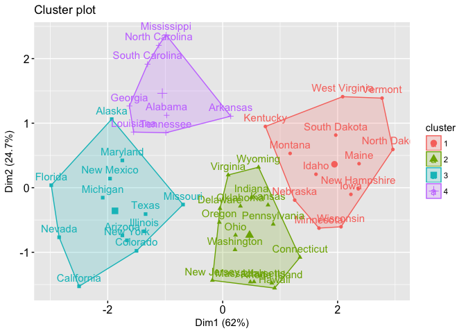

Clustering algorithms
Clustering problems are those in which you want to discover the data groups that best apply to the problem that you want to solve, how to group customers by their buying behavior
Clustering techniques can be classified into:
According to ownership of the data:
Exclusive: each instance belongs to a single cluster.
Overlapping: they are not exclusive and a piece of information can belong to more than one
cluster.
Hierarchical: each child can be joined to form a parent cluster.
Diffuse or probabilistic: each point belongs to all the clusters with degrees of membership
ranging from 0 to 1.
According to the algorithm used to find the clusters:
Prototype-based: each cluster is represented by a central object (prototype). It is usually the
center of the cluster - centroid.
Density cluster: A cluster can be defined as a dense region where objects are concentrated
surrounded by an area of low density. Low-density areas can be ruled out as noise.
Hierarchical cluster: They are generated based on the distance between the points. The output is
a dendrogram. There are two bottom-up approaches where each piece of data is considered a
cluster and the clusters are joined and top-down.
where the entire data set is a cluster and will be recursively divided into subclusters. It is
useful when the size of the information is limited.
Model-based cluster: A cluster can be conceived as a group in which the points have the same
probability of distribution. Each can be represented by a distribution model where the parameter
distribution can be iteratively optimized.
K-MEANS CLUSTERING
 In this technique the user / researcher specifies the
number of clusters k that should be grouped in the data set.
The objective of k-means is to find a prototype for each cluster, all the points are then
assigned to the closest prototype (centroid).
In k-means it is the mean of the points, but it could be the most representative information.
The centroid does not have to be a real point in the data set, it can be imaginary.
Each partition of the data set is also called Voronoi partitions and each prototype is a seed in
the partition, the points associated with the partition form a single partition.
K-Means clustering creates k partitions in n-dimensional space where n is the number of
attributes in the data set. To partition the data set, a proximity measure must be used, the
Euclidean distance is the most used.
You may have the problem of finding local optima rather than converging to the best global
solution.
ALGORITHM STEPS:
1- Start k centroids randomly. K must be specified by the user.
2- All points are assigned to the closest centroid to form a cluster. The most common distance
is Euclidean but others such as Jaccard's coefficient or Manhattan distance can be used.
3- For each cluster, new centroids are calculated. The centroid is the most representative point
of all the points in the cluster.
This step can be interpreted as minimizing the sum of squared errors (SSE) of all points in the
cluster to the centroid.
4 - Point assignment and centroid calculations are repeated until all points are reassigned to
new centroids.
5-Terminates when no changes are identified to the assignment.
DBSCAN - Density Based Spatial Clustering of Applications with Noise
A cluster can also be defined as an area of high data
concentration (or density) surrounded by areas of low data concentration.
A density-based cluster identifies clusters in information based on the measure of density
distribution in n-dimensional space.
You do not need to specify the number of cluster as a parameter.
Density can be defined as the number of points in a unit of n-dimensional space.
Said n-dimensional space is determined by the number of attributes in the data set. At any point
in the data set where there is a space of high density surrounded by another of relatively low
density, a cluster is identified.
Attributes are preferable numeric because distance calculation is used.
The algorithm can be reduced to three steps:
1. Define a density threshold.
2. Classify the points.
3. Group them into clusters.
The algorithm starts with a denity calculation of all points in the data set given an Epsilon
radius. A threshold is defined
of points from which it is considered "high density".
The points are classified into three:
Core points: within the high-density region.
Edge points: located on the circumference or radius at an Epsilon distance. Soon considered
within high-density space.
Noise points: It is not in either of the two previous classifications.
The groups of core points form different clusters. If two points considered core are at an
Epsilon distance (or less) one of
another belong to the same cluster.
HIERARCHICAL CLUSTERING
It is an alternative to k-means clustering that does
not require specifying a number of K. It additional benefit is that
they result in a tree-shaped representation of the observations (dendogram) that makes them
easily understandable.
There are bottom-up clustering that starts from the leaves and combines the clusters until
reaching the trunk and top-down that performs the reverse process.
The earlier the mergers occur, the more the observation groups resemble each other. The height
(considering the y-axis)
in which two groups of observations come together indicates how different they are. We cannot
make claims of how
Similar are two observations based on their distance on the horizontal axis.
The hierarchical term refers to the fact that the clusters are obtained by "cutting" the
dendrogram at any height.
The hierarchical clustering algorithm is very simple, it begins by defining a measure of
dissimilarity between each pair of observations.
The Euclidean distance is the most used, then the algorithm proceeds iteratively. Starting with
the leaves (in the bottom-up strategy), each observation
is defined as a cluster. The two most similar clusters merge into n-1 clusters. The algorithm
continues to proceed in the same way
until there is a single cluster.
To apply the concept of dissimilarity to groups of observations, the concept of link is used.
There are four types of link:
Complete: The maximum dissimilarity between the pairs of points in the clusters.
Simple: The minimum dissimilarity between the pairs of points in the clusters.
Average: the average of the differences between pairs of points of two clusters.
Centroid: dissimilarity between centroids of the clusters.
The most common are average, simple, and complete. Being average and complete preferred over
simple since they result in
more balanced dendograms.